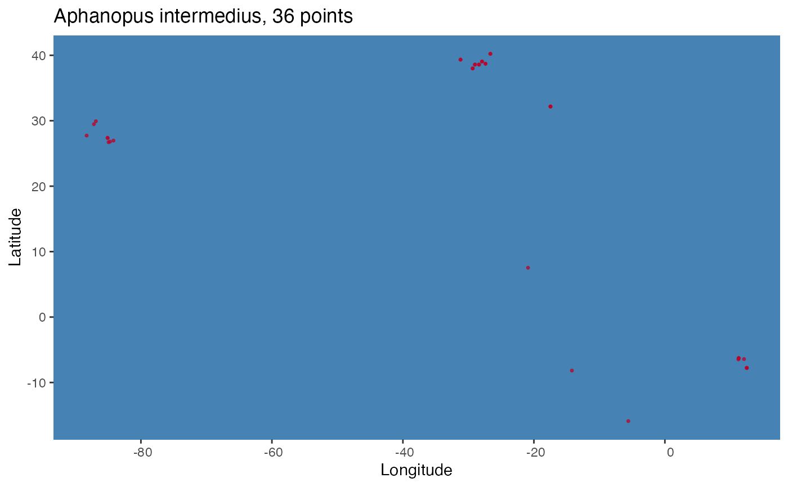

A convenient wrapper around ggplot to generate formatted occurrence point plots.
pointMap( occs, spName, land = NA, ptCol = "#bd0026", landCol = "gray", waterCol = "steelblue", ptSize = 1, ... )
| occs | A |
|---|---|
| spName | A character string with the species name to be used in the plot title. |
| land | An optional coastline polygon shapefile
of type |
| ptCol | Color for occurrence points on map |
| landCol | Color for land on map |
| waterCol | Color for water on map |
| ptSize |
|
| ... | Additional optional arguments to pass to
|
A ggplot plot object.
occs <- read.csv(system.file("extdata/Aphanopus_intermedius.csv", package='voluModel')) spName <- "Aphanopus intermedius" pointMap(occs = occs, spName = spName, land = NA)#> #>#> Warning: Use of `occs[[xIndex]]` is discouraged. Use `.data[[xIndex]]` instead.#> Warning: Use of `occs[[yIndex]]` is discouraged. Use `.data[[yIndex]]` instead.